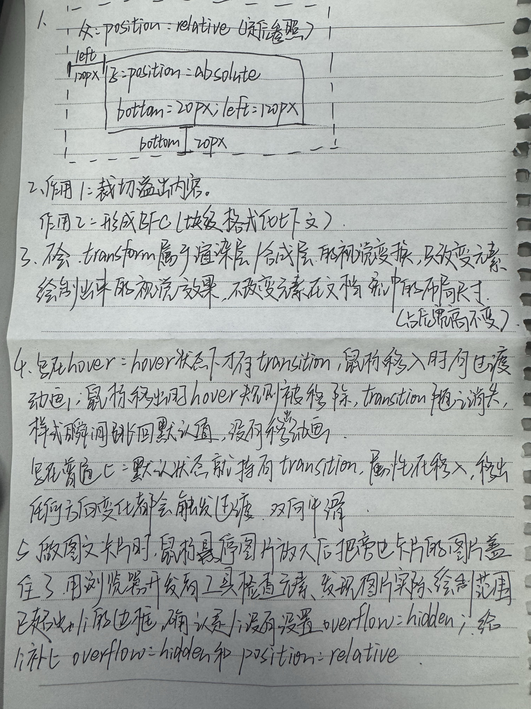

第一部分：看代码找错
三处bug和答案
Bug ①：图片放大跑出卡片，盖住旁边卡片
错误位置：.box li{...} 缺少 overflow:hidden，图片 scale(1.2) 放大后溢出了 li。
修改后代码行：
.box li{ width:300px; overflow:hidden; } /* 裁切放大后的图片，防止溢出遮挡相邻卡片 */Bug ②：文字展开只有移入有动画，鼠标移出无过渡效果
错误位置：transition:all .6s 写在了 .box li:hover img（hover状态）里。鼠标移出时 hover 规则失效，transition 也随之消失，所以没有移出动画。
修改后代码行：
.box img{ width:100%; transition:all .6s; } /* transition 移到默认选择器，移入移出都有动画 */Bug ③：卡片布局排版错乱
错误位置：.txt 用了 position:absolute，但父级 .box li 没有 position:relative（缺少"子绝父相"），文字条只能相对页面根元素定位，掉出卡片。
修改后代码行：
.box li{ width:300px; position:relative; } /* 子绝父相：作为 .txt 的定位参照 */修正后的完整代码
.box{
display:flex; /* 父容器开启 flex */
gap:10px; /* 卡片间隙用 gap */
}
.box li{
width:300px;
overflow:hidden; /* ① 裁切放大后的图片，防止遮挡相邻卡片 */
position:relative; /* ③ 子绝父相：作为 .txt 的定位参照 */
}
.box img{
width:100%;
display:block;
transition:all .6s; /* ② transition 写在默认选择器：移入移出都有动画 */
}
.box li:hover img{
transform:scale(1.2); /* hover 只做缩放，过渡由默认状态提供 */
}
.txt{
position:absolute; /* 子绝父相：相对 .box li 定位 */
left:0; right:0; /* 撑满卡片底部 */
bottom:0;
height:40px;
background:rgba(0,0,0,.6);
}第二部分：补全代码
2.1 语义标签填空
| 页面位置 | 语义标签 |
|---|---|
| 页面顶部头部区域 | <header> |
| 导航条 | <nav> |
| 页面唯一主要内容区 | <main> |
| 侧边栏附属内容 | <aside> |
| 页面底部版权页脚 | <footer> |
2.2 卡片动画补全
| 需要实现效果 | 填写关键CSS代码 / 答案 |
|---|---|
| 防止放大图片溢出li容器 | li添加属性：overflow:hidden |
| 子绝父相，让文字条定位在卡片底部 | li添加属性：position:relative（文字条 position:absolute; bottom:0） |
| hover图片从原始大小放大到scale(1.2) | 两个选择器：默认 .box img（写transition）+ 悬浮 .box li:hover img（写transform:scale(1.2)） |
| 文字高度平滑展开，移入移出都有动画。transition写在默认还是hover？为什么？ | 写在默认选择器上。因为 transition 写在 hover 上时，鼠标移出后 hover 规则被移除，transition 也随之消失，样式瞬间跳回原值，没有移出动画；写在默认选择器上，移入和移出两个方向都有过渡。 |
| 奇数卡片悬浮，文字铺满整张卡片 | 伪类选择器：:nth-child(odd) |
演示区（6张图文卡片，把鼠标移到卡片上查看效果：图片放大被裁切、文字条展开、第1/3/5张文字铺满整张卡片）
-

flex布局
版心内两栏弹性排列，无float，间隙用gap。
-

语义标签
header/nav/main/aside/footer各司其职。
-

子绝父相
父relative作参照，子absolute贴卡片底部。
-

overflow裁切
图片放大被裁在卡片内，不遮挡相邻卡片。
-

transition过渡
写在默认选择器，移入移出都平滑。
-

transform缩放
只改视觉，不占文档流位置。
2.3 flex两栏布局填空
父容器开启flex：display:flex;
设置两栏间隙8px的属性：gap:8px;（禁止margin）
版心1200px = 主内容792px + 间隙8px + 侧边栏400px
第三部分：手写原理简答

第四部分：扩展挑战
<!-- HTML：普通锚点链接即可回到顶部，无需JS -->
<a class="back-top" href="#top" title="回到顶部">↑</a>
.back-top{
position:fixed; /* 固定在视口左下角 */
left:20px; bottom:20px;
width:48px; height:48px;
border-radius:50%;
background:#000; color:#fff;
opacity:.5; /* 初始半透明 */
transition:all .3s;
z-index:999; /* 浮于页面内容之上 */
}
.back-top:hover{
opacity:1; /* hover完全不透明 */
transform:scale(1.1); /* 同时轻微放大 */
}